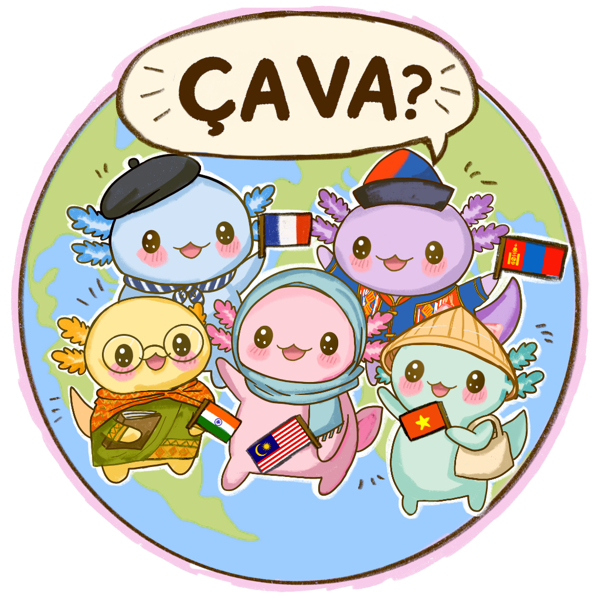
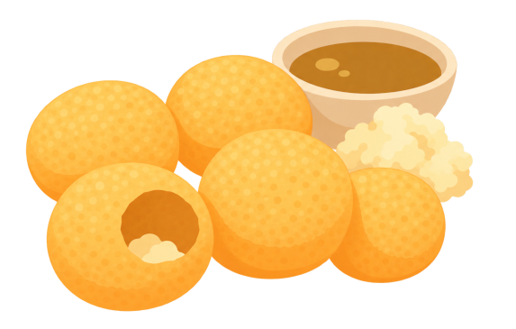

2026年 津田沼祭ー燈ー 2026年 津田沼祭ー燈ー
Ça va?
Warm, globally inspired flavors for the season. 世界の温かな味わいを。 季節に寄り添う、世界の温かな味わいを。
- Made with carefully selected authentic ingredients. 本場のこだわり食材を使用しています。 本場のこだわり食材を、使用しています。
- Our staff speak English. スタッフは全員英語を話します。 スタッフは英語で対応します。
- Our food and drinks are all vegan. 当店の料理と飲み物はすべてヴィーガンです。 当店の料理と飲み物はすべてヴィーガン仕様です。

Food 食品
